要求變更文件
要求變更文件 編輯此頁面
編輯此頁面 瞭解如何作出貢獻
瞭解如何作出貢獻還原與還原
下列各節將說明三種不同案例和範例組態的還原與還原工作流程。
-
自動還原與還原：
-
自動探索HANA系統SS1
-
SAP HANA單一主機、使用NFS的MDC單一租戶系統
-
-
單一租戶還原與還原：
-
自動探索HANA系統SM1
-
SAP HANA單一主機、使用NFS的MDC多租戶系統
-
-
手動還原：
-
手動設定HANA系統SS2
-
SAP HANA單一主機、使用NFS的MDC多租戶系統
-
以下各節將重點說明SAP HANA單一主機與多個主機與光纖通道SAN附加HANA系統之間的差異。
這些範例顯示SAP HANA Studio是執行手動還原的工具。您也可以使用SAP HANA Cockpit或HANA SQL聲明。
自動化還原與還原
利用NetApp 4.3、HANA單一容器或由他人自動探索的MDC單一租戶系統可支援自動還原與還原作業。SnapCenter SnapCenter
您可以使用下列步驟執行自動化還原與還原作業：
-
選取要用於還原作業的備份。您可以從下列儲存選項中選擇備份：
-
主儲存設備
-
異地備份儲存設備SnapVault （非目標）
-
-
選取還原類型。選取「使用Volume Revert或不使用Volume Revert進行完整還原」。

Volume Revert（磁碟區恢復）選項僅適用於從主要儲存設備還原作業、以及HANA資料庫使用NFS做為儲存傳輸協定時。 -
從下列選項中選取恢復類型：
-
至最新狀態
-
時間點
-
至特定資料備份
-
無法恢復
選取的還原類型用於還原系統和租戶資料庫。
-
接下來SnapCenter 、執行下列作業：
-
它會停止HANA資料庫。
-
還原資料庫。
視選取的還原類型和使用的儲存傳輸協定而定、會執行不同的作業。
-
如果選取NFS和Volume Revert、SnapCenter 則由停止掛載Volume、在SnapRestore 儲存層使用Volume Based的功能還原Volume、然後掛載Volume。
-
如果選取NFS且未選取Volume Revert、SnapCenter 則使用SnapRestore 儲存層上的單一檔案還原作業來還原所有檔案。
-
如果選取Fibre Channel SAN、SnapCenter 則由不裝載LUN、在SnapRestore 儲存層上使用單一檔案還原作業來還原LUN、並探索及裝載LUN。
-
-
它會恢復資料庫：
-
它會恢復系統資料庫。
-
它會恢復租戶資料庫。
或者、針對HANA單一容器系統、只需一個步驟即可執行還原：
-
它會啟動HANA資料庫。
-
|
|
如果選取「No Recovery（無恢復）SnapCenter 」、則必須手動執行系統和租戶資料庫的還原作業。 |
本節提供自動探索的HANA系統SS1（SAP HANA單一主機、使用NFS的MDC單一租戶系統）的自動還原與還原作業步驟。
-
選擇SnapCenter 要用於還原作業的支援。
您可以選擇從主要或異地備份儲存設備還原。 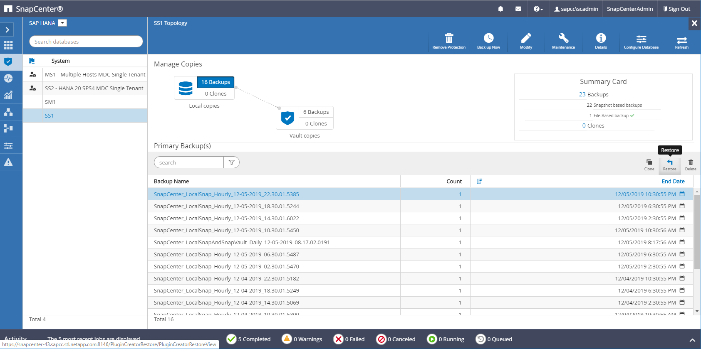
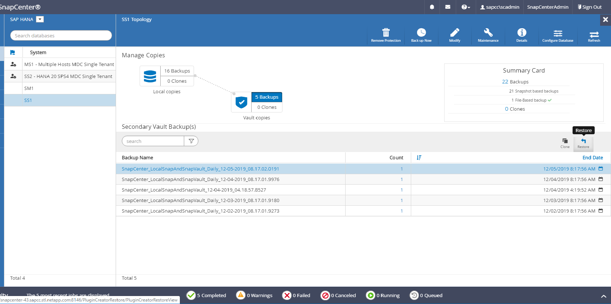
-
選取還原範圍和類型。
下列三個螢幕擷取畫面顯示從主要NFS還原、從次要NFS還原、以及從主要光纖通道SAN還原的還原選項。
用於從主儲存設備還原的還原類型選項。
Volume Revert（磁碟區恢復）選項僅可用於從主要NFS進行還原作業。 
從異地備份儲存設備還原的還原類型選項。

還原類型選項、可透過光纖通道SAN從主要儲存設備還原。

-
選取「恢復範圍」、並提供記錄備份和目錄備份的位置。
使用HANA global.ini檔案中的預設路徑或變更路徑、預先填入記錄和目錄備份位置。SnapCenter 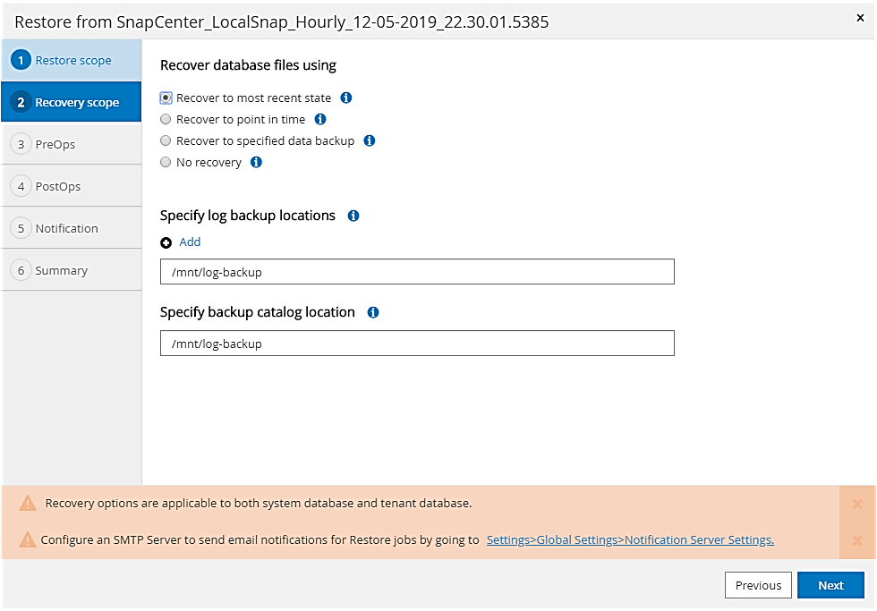
-
輸入選用的prerestore命令。
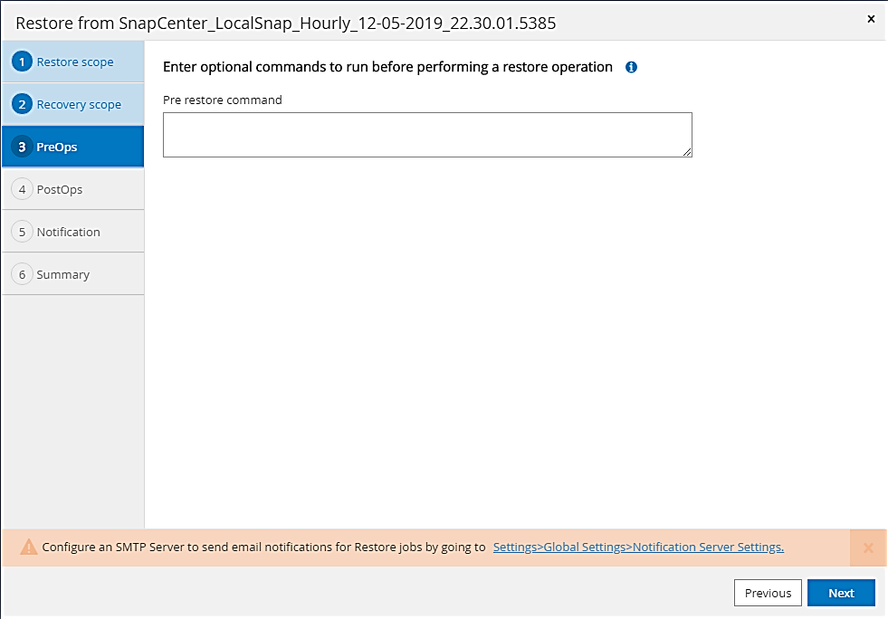
-
輸入可選的還原後命令。
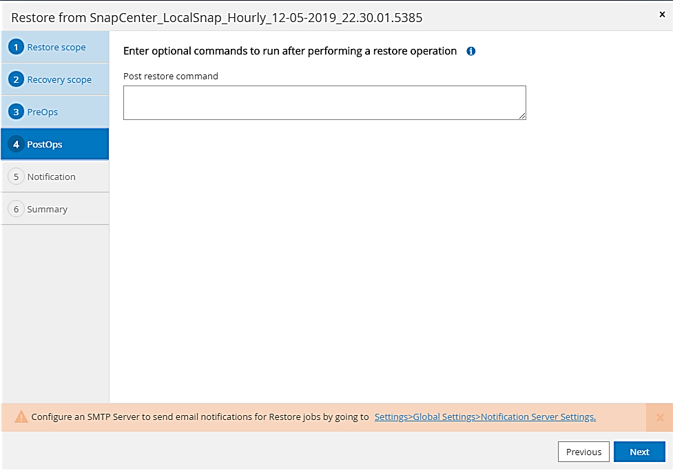
-
輸入選用的電子郵件設定。

-
若要開始還原作業、請按一下「Finish（完成）」。
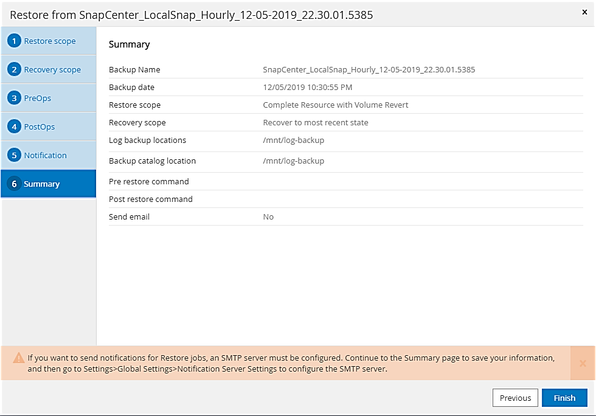
-
執行還原與還原作業。SnapCenter此範例顯示還原與還原工作的工作詳細資料。
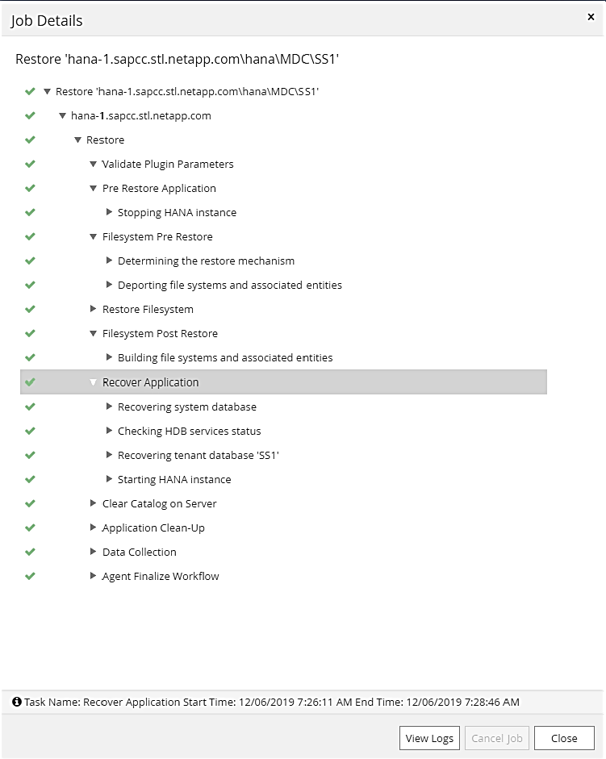
單一租戶還原與還原作業
有了NetApp 4.3、SnapCenter 只要擁有單一租戶或SnapCenter 多個租戶且已由NetApp自動探索的HANA MDC系統、就能支援單租戶還原作業。
您可以使用下列步驟執行單一租戶還原與還原作業：
-
停止要還原及還原的租戶。
-
使用SnapCenter 功能還原租戶。
-
若要從主要儲存設備還原、SnapCenter 則執行下列作業：
-
* NFS.*儲存單一檔案SnapRestore 的完整資料、適用於租戶資料庫的所有檔案。
-
* SAN.*複製LUN並將其連接至資料庫主機、然後複製租戶資料庫的所有檔案。
-
-
若要從二線儲存設備還原、SnapCenter 則執行下列作業：
-
* NFS*儲存SnapVault 設備還原租戶資料庫所有檔案的作業
-
* SAN.*複製LUN並將其連接至資料庫主機、然後複製租戶資料庫的所有檔案
-
-
-
使用HANA Studio、Cockpit或SQL聲明來恢復租戶。
本節提供從自動探索的HANA系統SM1（SAP HANA單一主機、使用NFS的MDC多租戶系統）主儲存設備進行還原與還原作業的步驟。從使用者輸入的觀點來看、從次要還原或在光纖通道SAN設定中還原的工作流程是相同的。
-
停止租戶資料庫。
sm1adm@hana-2:/usr/sap/SM1/HDB00> hdbsql -U SYSKEY Welcome to the SAP HANA Database interactive terminal. Type: \h for help with commands \q to quit hdbsql=> hdbsql SYSTEMDB=> alter system stop database tenant2; 0 rows affected (overall time 14.215281 sec; server time 14.212629 sec) hdbsql SYSTEMDB=> -
選擇SnapCenter 要用於還原作業的支援。

-
選取要還原的租戶。
顯示所選備份中包含的所有租戶清單。SnapCenter 
不支援SnapCenter 使用NetApp 4.3的單一租戶恢復。未預先選取任何恢復、且無法變更。

-
輸入選用的prerestore命令。

-
輸入選擇性的還原後命令。

-
輸入選用的電子郵件設定。
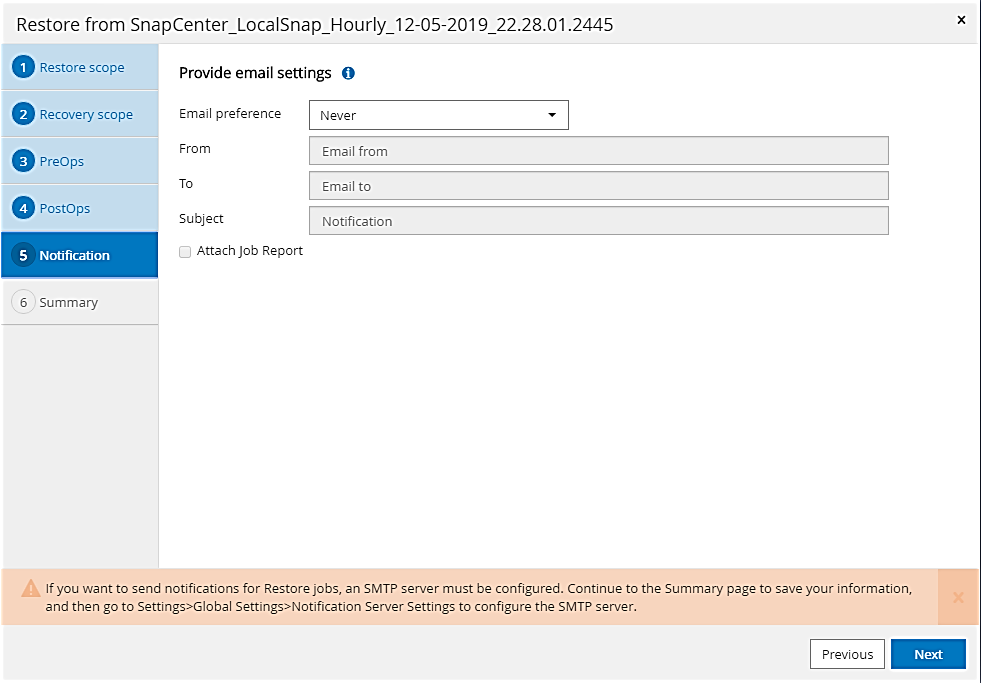
-
若要開始還原作業、請按一下「Finish（完成）」。

還原作業由SnapCenter 執行。此範例顯示還原工作的工作詳細資料。
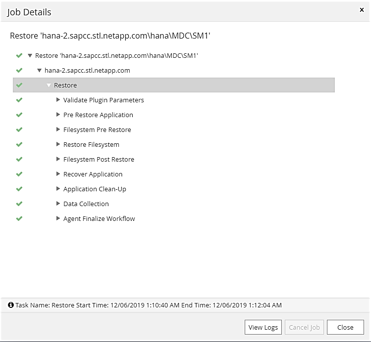
當租戶還原作業完成時、只會還原租戶相關資料。在HANA資料庫主機的檔案系統上、已還原的資料檔案和租戶的Snapshot備份ID檔案可供使用。 sm1adm@hana-2:/usr/sap/SM1/HDB00> ls -al /hana/data/SM1/mnt00001/* -rw-r--r-- 1 sm1adm sapsys 17 Dec 6 04:01 /hana/data/SM1/mnt00001/nameserver.lck /hana/data/SM1/mnt00001/hdb00001: total 3417776 drwxr-x--- 2 sm1adm sapsys 4096 Dec 6 01:14 . drwxr-x--- 6 sm1adm sapsys 4096 Nov 20 09:35 .. -rw-r----- 1 sm1adm sapsys 3758096384 Dec 6 03:59 datavolume_0000.dat -rw-r----- 1 sm1adm sapsys 0 Nov 20 08:36 __DO_NOT_TOUCH_FILES_IN_THIS_DIRECTORY__ -rw-r----- 1 sm1adm sapsys 36 Nov 20 08:37 landscape.id /hana/data/SM1/mnt00001/hdb00002.00003: total 67772 drwxr-xr-- 2 sm1adm sapsys 4096 Nov 20 08:37 . drwxr-x--- 6 sm1adm sapsys 4096 Nov 20 09:35 .. -rw-r--r-- 1 sm1adm sapsys 201441280 Dec 6 03:59 datavolume_0000.dat -rw-r--r-- 1 sm1adm sapsys 0 Nov 20 08:37 __DO_NOT_TOUCH_FILES_IN_THIS_DIRECTORY__ /hana/data/SM1/mnt00001/hdb00002.00004: total 3411836 drwxr-xr-- 2 sm1adm sapsys 4096 Dec 6 03:57 . drwxr-x--- 6 sm1adm sapsys 4096 Nov 20 09:35 .. -rw-r--r-- 1 sm1adm sapsys 3758096384 Dec 6 01:14 datavolume_0000.dat -rw-r--r-- 1 sm1adm sapsys 0 Nov 20 09:35 __DO_NOT_TOUCH_FILES_IN_THIS_DIRECTORY__ -rw-r----- 1 sm1adm sapsys 155648 Dec 6 01:14 snapshot_databackup_0_1 /hana/data/SM1/mnt00001/hdb00003.00003: total 3364216 drwxr-xr-- 2 sm1adm sapsys 4096 Dec 6 01:14 . drwxr-x--- 6 sm1adm sapsys 4096 Nov 20 09:35 .. -rw-r--r-- 1 sm1adm sapsys 3758096384 Dec 6 03:59 datavolume_0000.dat -rw-r--r-- 1 sm1adm sapsys 0 Nov 20 08:37 __DO_NOT_TOUCH_FILES_IN_THIS_DIRECTORY__ sm1adm@hana-2:/usr/sap/SM1/HDB00>
-
使用HANA Studio開始恢復。
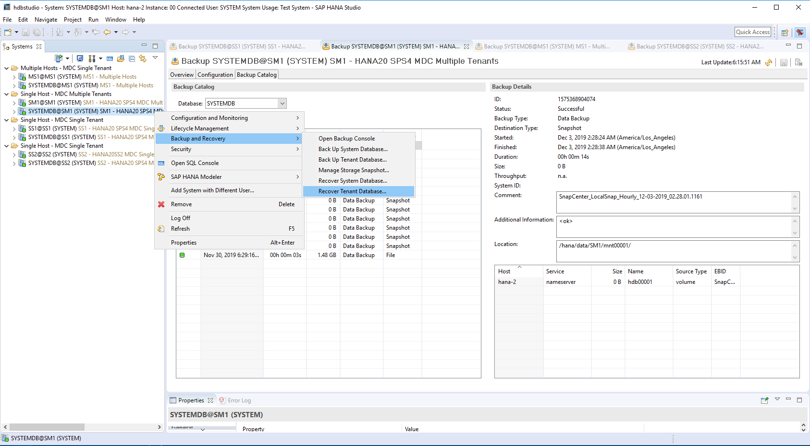
-
選取租戶。

-
選取恢復類型。

-
提供備份目錄位置。

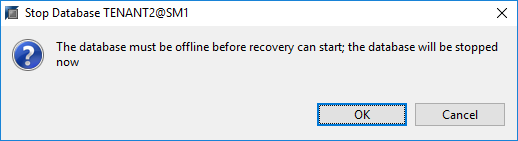
在備份目錄中、還原的備份會以綠色圖示反白顯示。外部備份ID會顯示SnapCenter 先前在畫面中選取的備份名稱。
-
選取含有綠色圖示的項目、然後按「Next（下一步）」。

-
提供記錄備份位置。

-
視需要選取其他設定。

-
啟動租戶還原作業。
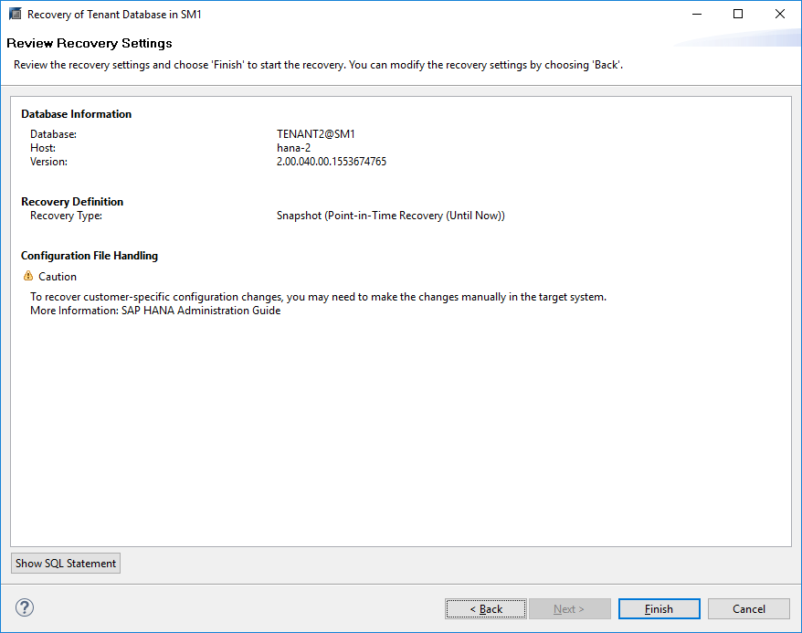

以手動恢復進行還原
若要使用SAP HANA Studio和SnapCenter NetApp還原SAP HANA MDC單租戶系統、請完成下列步驟：
-
利用SAP HANA Studio準備還原與還原程序：
-
選取「恢復系統資料庫」並確認SAP HANA系統關機。
-
選取恢復類型和記錄備份位置。
-
此時會顯示資料備份清單。選取備份以查看外部備份ID。
-
-
利用下列功能執行還原程序SnapCenter ：
-
在資源的拓撲檢視中、如果您要從異地備份儲存設備還原、請選取要從主要儲存設備還原的本機複本或Vault複本。
-
從SnapCenter SAP HANA Studio選取符合外部備份ID或備註欄位的支援功能。
-
開始還原程序。
如果選擇從主要儲存設備進行磁碟區型還原、則必須先從所有SAP HANA資料庫主機卸載資料磁碟區、然後還原程序完成後再重新掛載。
在使用FC的SAP HANA多主機設定中、卸載和掛載作業是由SAP HANA名稱伺服器執行、作為資料庫關機和啟動程序的一部分。 -
-
使用SAP HANA Studio執行系統資料庫的還原程序：
-
按一下備份清單中的重新整理、然後選取可用的備份以供還原（以綠色圖示表示）。
-
開始恢復程序。恢復程序完成後、系統資料庫便會啟動。
-
-
使用SAP HANA Studio執行租戶資料庫的還原程序：
-
選取「恢復租戶資料庫」、然後選取要恢復的租戶。
-
選取恢復類型和記錄備份位置。
此時會顯示一份資料備份清單。由於資料磁碟區已還原、因此租戶備份會顯示為可用（綠色）。
-
選取此備份並開始恢復程序。還原程序完成後、租戶資料庫會自動啟動。
-
下節說明手動設定的HANA系統SS2（SAP HANA單一主機、使用NFS的MDC多租戶系統）的還原與還原作業步驟。
-
在SAP HANA Studio中、選取「恢復系統資料庫」選項以開始還原系統資料庫。
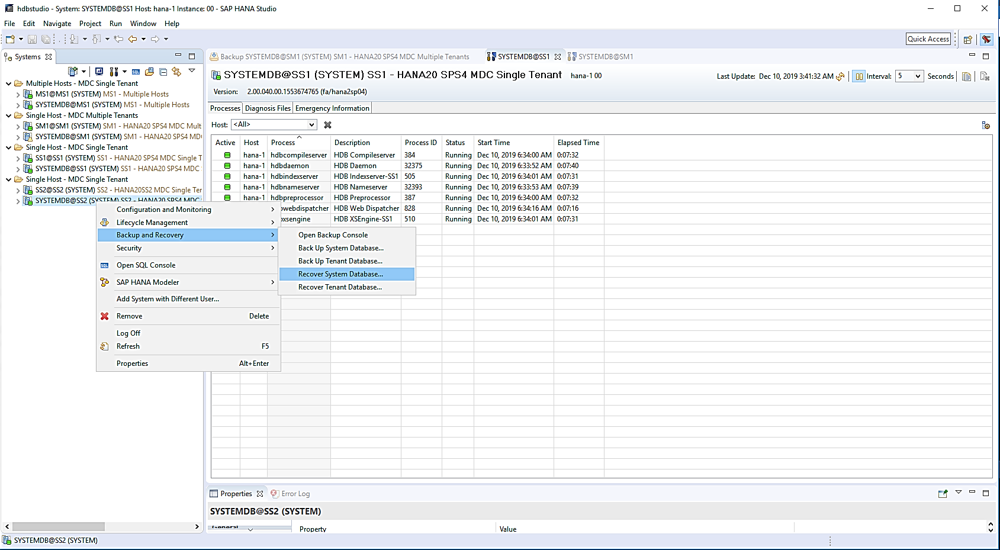
-
按一下「確定」關閉SAP HANA資料庫。

SAP HANA系統隨即關機、並啟動還原精靈。
-
選取恢復類型、然後按「Next（下一步）」。
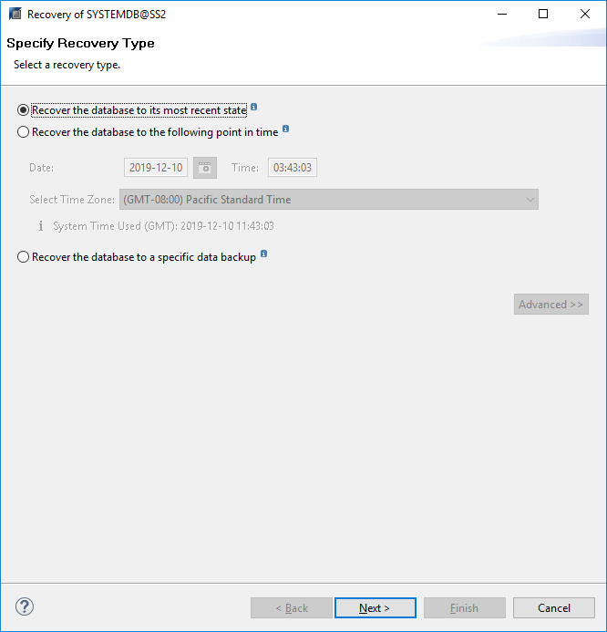
-
提供備份目錄的位置、然後按「Next（下一步）」。

-
可用備份清單會根據備份目錄的內容顯示。選擇所需的備份、並記下外部備份ID：在我們的範例中、是最新的備份。

-
卸載所有資料磁碟區。
umount /hana/data/SS2/mnt00001
對於採用NFS的SAP HANA多主機系統、每個主機上的所有資料磁碟區都必須卸載。
在使用FC的SAP HANA多主機設定中、卸載作業是由SAP HANA名稱伺服器執行、做為關機程序的一部分。 -
從「支援GUI」中選取資源拓撲檢視、然後選取應還原的備份；在我們的範例中、是最新的主要備份。SnapCenter按一下「還原」圖示以開始還原。

隨即啟動還原精靈。SnapCenter
-
選取還原類型「完整資源」或「檔案層級」。
選取「完整資源」以使用磁碟區型還原。

-
選取「檔案層級」和「全部」、即可SnapRestore 針對所有檔案使用單一檔案的還原作業。
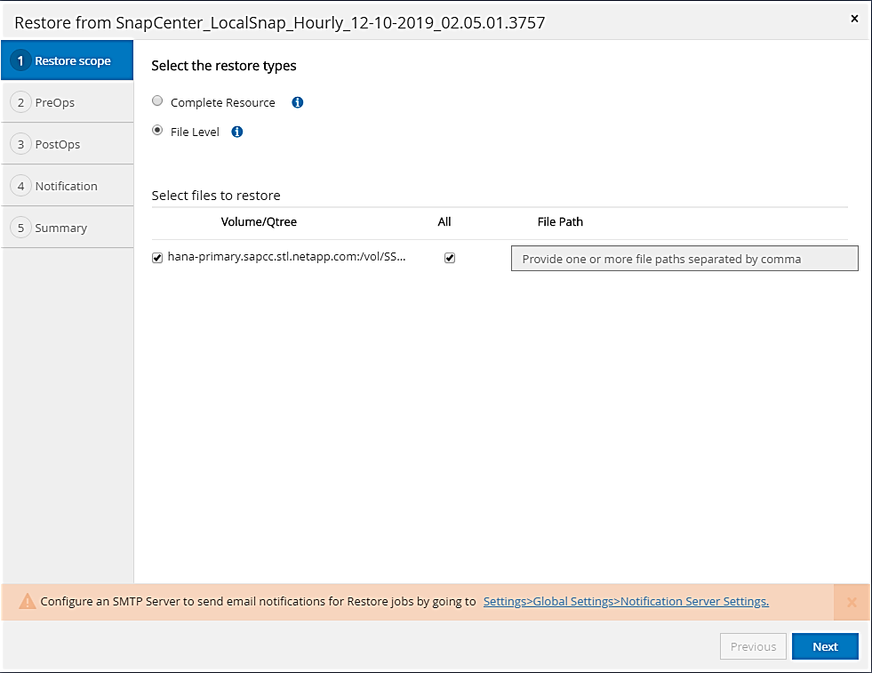
若需SAP HANA多主機系統的檔案層級還原、請選取所有磁碟區。 
-
（選用）指定應從中央HANA外掛主機上執行的SAP HANA外掛程式執行的命令。按一下「下一步」

-
指定選用命令、然後按「Next（下一步）」。
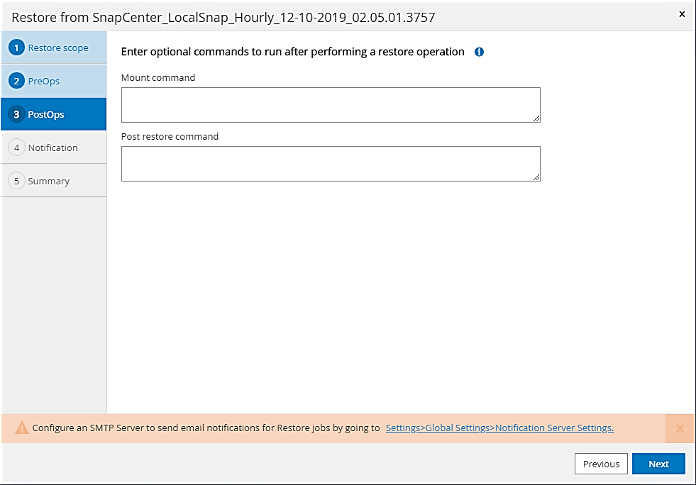
-
指定通知設定、SnapCenter 以便讓支援部門傳送狀態電子郵件和工作記錄。按一下「下一步」

-
檢閱摘要、然後按一下「Finish（完成）」開始還原。

-
還原工作隨即啟動、按兩下活動窗格中的記錄行即可顯示工作記錄。

-
等待還原程序完成。在每個資料庫主機上、掛載所有資料磁碟區。在我們的範例中、只有一個磁碟區必須重新掛載到資料庫主機上。
mount /hana/data/SP1/mnt00001
-
前往SAP HANA Studio並按一下「Refresh」（重新整理）以更新可用備份清單。使用還原的備份SnapCenter 會在備份清單中顯示綠色圖示。選取備份、然後按「Next（下一步）」。

-
提供記錄備份的位置。按一下「下一步」

-
視需要選取其他設定。請確定未選取「使用差異備份」。按一下「下一步」

-
檢閱恢復設定、然後按一下「Finish（完成）」。

-
恢復程序隨即開始。等待系統資料庫恢復完成。

-
在SAP HANA Studio中、選取系統資料庫的項目、然後開始備份恢復-恢復租戶資料庫。

-
選取要恢復的租戶、然後按「Next（下一步）」。
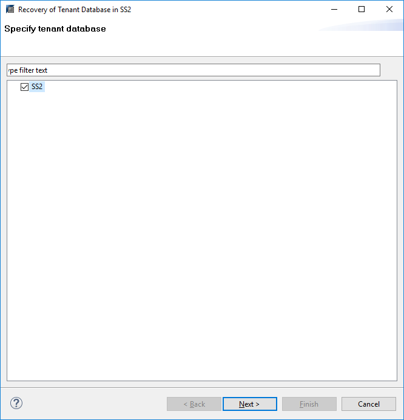
-
指定恢復類型、然後按「Next（下一步）」。

-
確認備份目錄位置、然後按「Next（下一步）」。

-
確認租戶資料庫已離線。按一下「確定」以繼續。

-
由於資料磁碟區的還原是在系統資料庫還原之前進行、因此租戶備份可以立即使用。選取以綠色反白顯示的備份、然後按「Next（下一步）」。

-
確認記錄備份位置、然後按「Next（下一步）」。
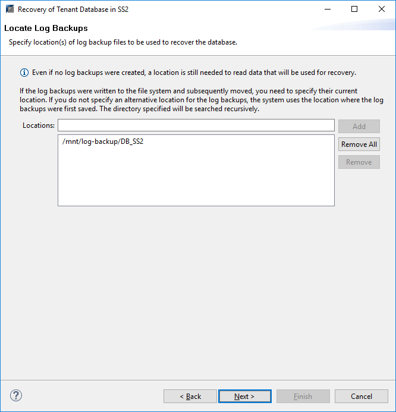
-
視需要選取其他設定。請確定未選取「使用差異備份」。按一下「下一步」
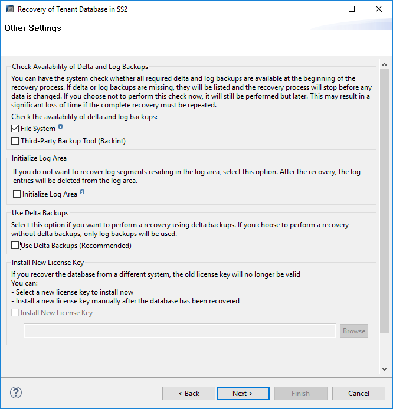
-
按一下「Finish（完成）」以檢閱恢復設定、並開始租戶資料庫的恢復程序。
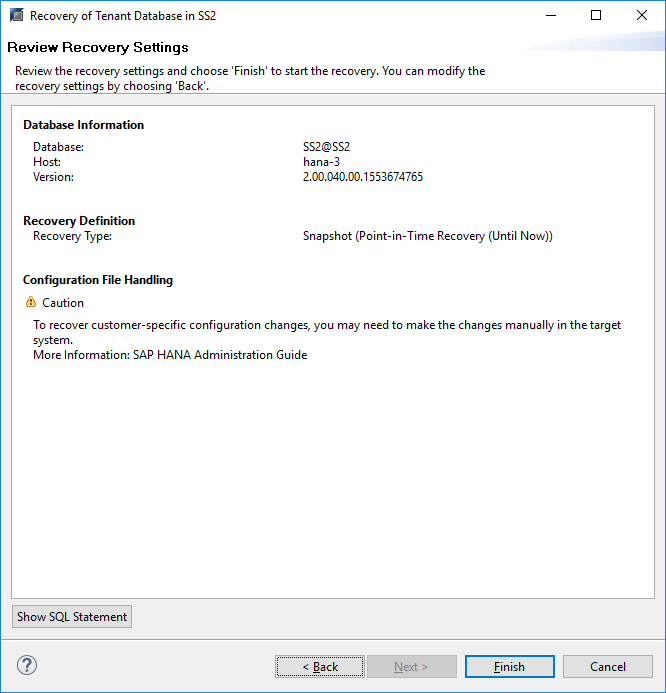
-
等到還原完成、租戶資料庫開始。
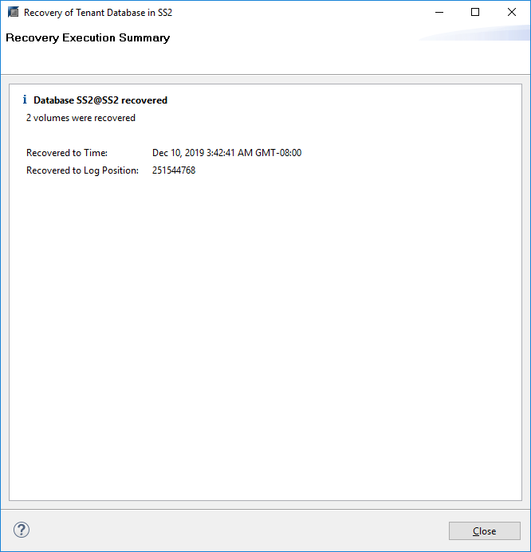
SAP HANA系統已啟動並開始運作。
對於具有多個租戶的SAP HANA MDC系統、您必須針對每個租戶重複步驟20–29。